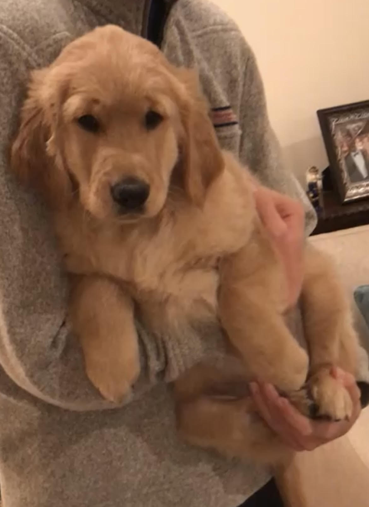
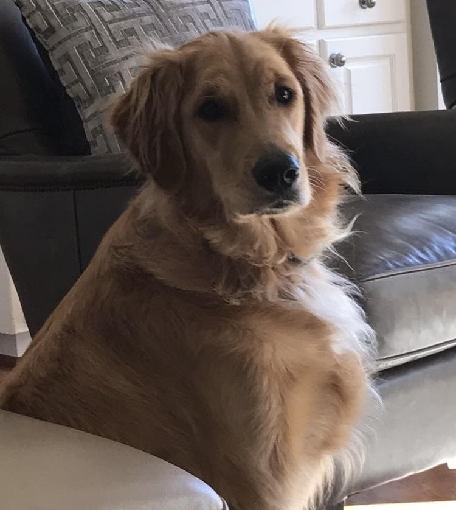
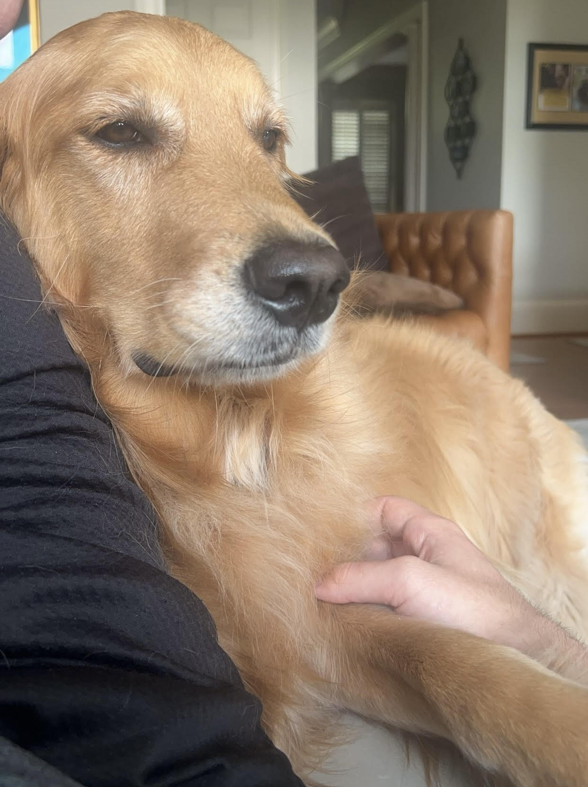

Molly is a golden retriever that's my Mom and Stepdad's dog. She's 4 years old and will be 5 on September 24th. She's a very kind and sweet dog but was raised during Covid-19
and has some social anxiety as a result. She loves meeting new people and constiently wants attention. Some of her favorite things to do are retrieve (steal) items,
play tug-of-war, chase after cars, bark at walkers, and fight lizards/geese. Click here for more info about Golden Retrievers.
| Young (~3 Months) | Teenage (~2 Years) | Older (~5 Years) |
|---|---|---|
|  |  |  |
Molly is definitely an interesting dog. Unlike most golden retrievers, Molly hates water. She doesn't like swimming, playing in, or taking a bath.
Molly also doesn't like affection between family members for some reason. If I or someone else goes to give another family member a hug she comes to get inbetween
the interaction. Molly also has "moods" where she just goes and lays down somewhere random even if the family is together and hanging out. During this "mood" she will
almost always ignore any remarks trying to get her to join the group.